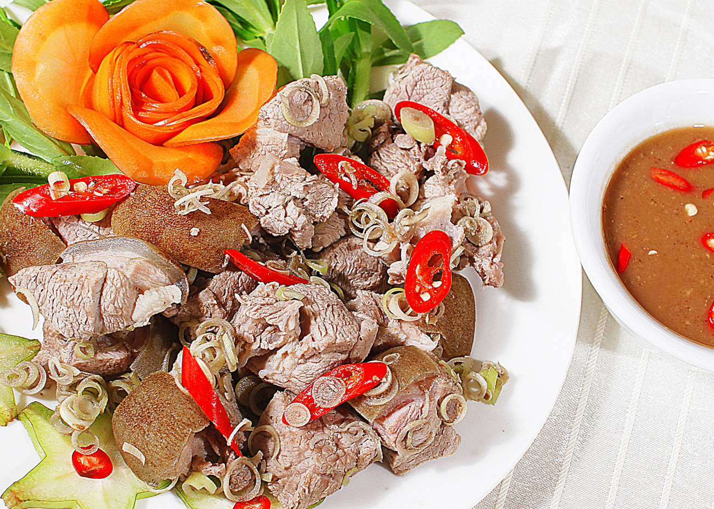

20 món ngon từ thịt dê
Ẩm thực Ninh Bình
Thịt dê là loại thịt có rất nhiều dưỡng chất tốt cho tất cả mọi người. Thịt dê giúp hồi phục sức khỏe nhanh cho người già, tăng cường sinh lực cho phái mạnh và đặc biệt món chân dê hầm rất tốt cho phụ nữ sau khi sinh con.
Thịt dê là loại thịt có rất nhiều dưỡng chất tốt cho tất cả mọi người. Thịt dê giúp hồi phục sức khỏe nhanh cho người già, tăng cường sinh lực cho phái mạnh và đặc biệt món chân dê hầm rất tốt cho phụ nữ sau khi sinh con. Theo các nhà nghiên cứu, thịt dê được xem là loại thịt động vật có chứa nhiều vitamin nhóm B, nhất là Riboflavin và B12. Thịt dê là nguồn cung cấp tốt về chất đạm, ít chất béo hơn thịt bò và ít calories hơn thịt gà nướng. Thịt dê còn là nguồn cung cấp tốt về chất sắt dưới dạng heme rất dễ hấp thu nên khá tốt đối với người bị thiếu máu. Ngoài ra tỷ lệ Kẽm trong thịt dê cũng tương đối cao. Như vậy thịt dê là thực phẩm rất bổ dưỡng mà phụ nữ mang thai nên lựa chọn.
20 món ăn được chế biến từ thịt dê:
1) Dê xào lăn
2) Cà ri dê
3) Lâu dê
4) Dê hầm ngũ vị
5) Cháo thịt dê:
6) Dê tái chanh:
7) Dê xào thập cẩm
8) Dê xào sa tế
9) Dê né:
10) Dê nhúng mẻ
11) Dê xào sả ớt
12) Canh sơn dược thịt dê
13) Ngọc dương tiềm thuốc bắc
14) Dê nướng mọi
16) Dê nướng ngũ vị
17) Dê hấp lá tía tô
18) Nầm dê nướng
19) Chân dê hầm thuốc bắc
20) Dê ủ trấu

* Các bài thuốc chữa bệnh từ dê
1. Cháo xương dê sâm kỳ linh táo: Xương dê 100g, hoàng kỳ 30g, nhân sâm 6g, phục linh 15g, đại táo 5 quả, gạo tẻ 100g. Đem các dược liệu sắc lấy nước, dùng nước sắc nấu với gạo thành cháo,xương dê đập nhỏ ninh nhừ(nếu dùng cao xương dê thì chỉ cần cho vào cháo10g quấy tan), khi cháo chín nhừ thêm gia vị thích hợp. Dùng cho các trường hợp gầy sút dễ cảm cúm, tự hãn, cơ thể suy nhược.
2. Xương dê hầm sơn dược: Xương dê 250g(cao xương dê 10g), sơn dược 100g, kỷ tử 25g, long nhãn 15g, đại táo 10 quả. Tất cả hầm chín nhừ thêm gia vị. Cho ăn buổi tối trước khi đi ngủ. Dùng cho bệnh nhân thận dương hư, di tinh liệt dương...
3. Đương qui sinh khương dương thang: Thịt dê 200g, gừng tươi 12g, đương qui 20g. Thịt dê làm sạch thái lát, gừng cạo vỏ ngoài đập giập, nấu với đương qui thái lát và một lượng nước thích hợp. Khi thịt chín nhừ, vớt bỏ bã thuốc, thêm gia vị, bột tiêu. Ăn 2 - 3 lần trong ngày. Dùng cho người cao tuổi thể trạng suy nhược, phụ nữ sau sinh đẻ huyết hư thiếu máu, người bệnh suy nhược sau bị bệnh lâu ngày; trường hợp trúng hàn phúc thống.
4. Đương qui dương cốt canh: cao xương dê 10-15g, hoàng kỳ 25g, đảng sâm 25g, đương qui 25g. , cao xương dê thái mỏng, hoàng kỳ, đảng sâm, đương qui thái nhỏ, dùng vải xô gói lại, nấu với một lượng nước thích hợp. Khi mọi thứ đã chín nhừ, cho gừng tươi đập giập, muối ăn và các gia vị khác thích hợp, tiếp tục cho sôi đều, lấy bỏ bã thuốc. Ăn nóng. Dùng cho phụ nữ sau đẻ, cơ thể suy nhược thiếu máu, sốt nhẹ, vã mồ hôi, lạnh tay chân.
5. Súp cao dê củ mài: Cao dê 15g, gừng tươi 15g; hành tươi 30g, sơn dược 500g. Cao dê cắt mỏng, gừng tươi, hành tươi đập giập để sẵn, sơn dược thái lát. Tất cả cho vào nồi, thêm bột tiêu, dấm, rượu, nước sạch. Đun to lửa, vớt bỏ váng bọt, đun nhỏ lửa cho chín. Vớt bỏ bã gừng hành, thêm gia vị, Chia ăn nhiều bữa. Chữa các trường hợp hư lao suy nhược cơ thể, huyết trắng, trẻ em suy dinh dưỡng, ho lâu ngày do viêm khí phế quản, tiêu chảy.
6. Cháo hành nước cốt gan dê: Gan dê 1 bộ thái lát, nấu hầm lấy nước, gạo tẻ 100g nấu cháo đặc, thêm nước cốt gan dê, hành củ, gia vị mắm muối, đun lại cho sôi đều. Dùng cho các trường hợp giảm thị lực.
7. Cháo gan dê cà rốt: Gan dê 150g, cà rốt 100g, gạo tẻ 100g. Gạo tẻ đem nấu cháo; cà rốt gọt vỏ thái lát cho vào cháo đun nhỏ lửa 15 - 20 phút; gan dê thái lát ngâm với rượu dấm gừng trong 10 - 15 phút, sau đó xào tái với hành tỏi, cho vào cháo khuấy đều thêm gia vị. Dùng cho các trường hợp quáng gà mờ mắt giảm thị lực, suy nhược chức năng gan.
8. Cháo tuỷ dê: Xương sống và xương chậu, xương đùi 300 - 500g, gạo tẻ 500g. Nấu cháo thêm gia vị thích hợp; hoặc xương tuỷ sống chặt khúc nấu cùng với gạo thành cháo, bỏ xương và vớt bỏ nước váng mỡ, thêm gia vị. Ăn khi đói. Dùng cho các trường hợp mỏi mệt, đau lưng mỏi gối ở người cao tuổi.
9. Cháo xương dê: Xương dê (dương cốt) khoảng 1000g(cao xương dê: 15g), gạo tẻ 100g. Xương dê làm sạch, chặt khúc (cao xương dê thái mỏng) đem nấu cháo với gạo tẻ; khi được cháo thêm muối, gừng tươi, hành gia vị. Cho ăn nóng khi đói. Dùng cho các trường hợp xuất huyết dưới da do giảm tiểu cầu, thiếu máu do thiếu dinh dưỡng.
10. Lòng dê hầm bạch truật: Dạ dày dê 1 cái, bạch truật 30g, thêm gia vị, nước hầm nhừ. Chia 2 lần ăn trong ngày. Dùng cho người bệnh suy nhược, sút cân, chán ăn.
11. Ruột dê hầm hoàng kỳ đậu đen: Dạ dày dê 1 cái, hoàng kỳ 40 - 60g, đậu đen 60g. Dạ dày dê rửa sạch thái lát, hoàng kỳ thái nhỏ, cho tất cả với nước, hầm nhừ, thêm gia vị. Dùng cho người thể trạng hư nhược, vã mồ hôi, tiểu giắt.
Kiêng kỵ: Không dùng cho người có biểu hiện sốt nóng do nhiễm trùng viêm tấy. Trong tời gian ăn các món nấu từ thịt dê, không dùng các thuốc có xương bồ, bán hạ.
Nguồn: Ninhbinh360